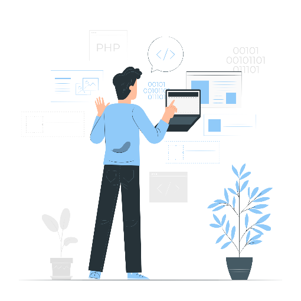

Desenvolvimento Web
Introdução sobre o tema
O conjunto de artigos aborda de maneira abrangente e detalhada o campo do desenvolvimento web, um dos pilares fundamentais na era digital em que vivemos. Com a proliferação da internet e a crescente dependência de plataformas online para diversas atividades, o desenvolvimento web emergiu como uma disciplina essencial para a criação, implementação e manutenção de websites e aplicações que permeiam a vasta paisagem digital. Estes artigos proporcionam uma visão abrangente sobre os aspectos centrais do desenvolvimento web, desde suas definições básicas até as habilidades e tecnologias envolvidas.
Desenvolvimento Web: Uma Visão Geral
O desenvolvimento web surgiu como um campo absolutamente crucial na era digital, sendo responsável pela criação, implementação e manutenção de sites e aplicações que permeiam a vastidão da internet. Este domínio abrange uma série de etapas intricadas e disciplinas interconectadas, todas convergindo para moldar a experiência online que os usuários vivenciam diariamente. Desde a estética visual até as funcionalidades interativas, o desenvolvimento web é o alicerce sobre o qual a paisagem digital moderna é construída. No coração do desenvolvimento web estão os desenvolvedores, indivíduos habilidosos e inovadores que têm a tarefa de transformar conceitos abstratos em realidades virtuais tangíveis. Eles são mestres da tradução, capazes de transformar a visão de um site em código concreto que os navegadores podem interpretar. Esses profissionais combinam criatividade, conhecimento técnico e um olhar afiado para detalhes, garantindo que cada elemento do site seja meticulosamente planejado e executado.
Um Desenvolvedor Web: Responsabilidades e Habilidades
Um desenvolvedor web é um profissional que projeta, desenvolve e mantém sites e aplicações online. Esses profissionais têm uma gama de responsabilidades, incluindo a escrita de código, o design da interface do usuário, a implementação de funcionalidades interativas e a otimização do desempenho do site. Eles trabalham com linguagens de programação e tecnologias específicas para alcançar os objetivos do projeto.
Front-End e Back-End: Duas Faces do Desenvolvimento Web
Front-End: Também conhecido como o lado do cliente, o front-end lida com a parte visual e interativa de um site. Desenvolvedores front-end utilizam tecnologias como HTML (Hypertext Markup Language) para estruturar o conteúdo, CSS (Cascading Style Sheets) para estilizar o layout e o design, e JavaScript para criar interatividade e dinamismo na página.
Back-End: O back-end, ou lado do servidor, é responsável pelo funcionamento por trás das cenas. Os desenvolvedores back-end trabalham na construção de servidores, bancos de dados e lógica de negócios que permitem que um site funcione corretamente. Eles utilizam linguagens de programação como Python, PHP, Ruby e frameworks como Node.js para construir e gerenciar a funcionalidade do servidor.
Desenvolvimento Web Full Stack: Dominando Ambos os Lados
O desenvolvimento web full stack envolve a combinação de habilidades front-end e back-end, permitindo que um desenvolvedor trabalhe em todas as partes de um projeto. Isso inclui desde a criação da interface do usuário até a configuração do servidor e do banco de dados. Um desenvolvedor full stack é capaz de criar um projeto web completo, da concepção à implementação.
Principais Tecnologias: HTML, CSS e JavaScript

HTML: É a linguagem de marcação usada para estruturar e organizar o conteúdo de uma página web. Define elementos como títulos, parágrafos, imagens e links.
CSS: (Cascading Style Sheets) é usado para estilizar a apresentação dos elementos HTML. Ele controla o layout, as cores, as fontes e outros aspectos visuais de um site.
JavaScript: Uma linguagem de programação que permite adicionar interatividade e dinamismo a páginas web. Ele é usado para criar recursos como menus deslizantes, formulários interativos e animações.
Principais editores de código para desenvolvimento front-end
Visual Studio Code
O Visual Studio Code é um ambiente de desenvolvimento amplamente usado para criação de aplicações front-end. Ele oferece recursos para edição de código HTML, CSS e JavaScript, incluindo realce de sintaxe, autocompletar e formatação automática. Possui integração com Git, facilitando o controle de versão. Sua biblioteca extensiva de extensões comunitárias permite personalizar o ambiente para diferentes tarefas, como suporte a frameworks, linting e mais. O VS Code também suporta depuração de código JavaScript e TypeScript, além de permitir integração com servidores de desenvolvimento para visualização em tempo real. Com um terminal integrado, gerenciamento de pacotes e outras ferramentas, o VS Code é uma opção eficaz para desenvolvedores front-end.
Clique na imagem abaixo para download do Visual Studio Code:
Visual Studio
O Visual Studio é um ambiente de desenvolvimento integrado (IDE) abrangente oferecido pela Microsoft, utilizado para criação de aplicativos e interfaces front-end. Ele fornece uma ampla gama de ferramentas e recursos para desenvolvimento web, incluindo linguagens como HTML, CSS e JavaScript. O Visual Studio possui um conjunto de recursos avançados para design, codificação, depuração e testes de aplicações front-end. Com suporte a extensões e integração com o ecossistema Microsoft, o Visual Studio é uma opção robusta para desenvolvedores que buscam uma solução completa e poderosa para criar experiências de usuário dinâmicas e responsivas.
Clique na imagem abaixo para download do Visual Studio:
Sublime Text
O Sublime Text é um popular editor de código conhecido por sua simplicidade, velocidade e eficiência. Ele é amplamente utilizado por desenvolvedores para escrever código em diversas linguagens de programação, incluindo HTML, CSS e JavaScript. Algumas das características notáveis do Sublime Text incluem:
Clique na imagem abaixo para download do Sublime Text:
Principais opções gratuitas para hospedagem de sites estáticos
GitHub Pages
Oferecido pelo GitHub, o GitHub Pages permite hospedar sites estáticos diretamente de repositórios do GitHub. É fácil de usar e suporta integração com Git para controle de versão.
Clique na imagem abaixo para abrir uma página do GitHub Pages:
Netlify
Fornece uma plataforma completa para hospedagem e implantação contínua de sites estáticos. Ele oferece integração com repositórios Git, HTTPS automático e muito mais.
Clique na imagem abaixo para abrir uma página do Netlify:
Vercel
Especializado em hospedagem para projetos baseados em frameworks como Next.js e Vue.js (mas também útil para outras tipos de hospedagem). Oferece implantação fácil e rápida com integração contínua.
Clique na imagem abaixo para abrir uma página do Vercel:
Dicas de como iniciar na carreira de desenvolvimento web
Para iniciar na carreira de desenvolvimento front-end, você precisa construir uma base sólida. Comece aprendendo HTML para estruturação de conteúdo e CSS para design e layout. Em seguida, mergulhe no JavaScript, a linguagem de programação que dá vida à interface e interatividade. À medida que você ganha confiança, explore frameworks populares como React, Angular ou Vue.js. Eles oferecem ferramentas poderosas para acelerar o desenvolvimento e criar interfaces mais complexas. Pratique muito! Crie pequenos projetos pessoais para aplicar seus conhecimentos e construir um portfólio. Usar plataformas como GitHub para compartilhar seu trabalho é uma ótima ideia.
Sobre o autor
Olá, me chamo Luiz Roberto, tenho 19 anos e sou estudante do curso Ciência da Computação, na Escola Superior Dom Helder Câmara e até a data de publicação desse artigo, estou cursando o segundo período do curso.
Contatos:
E-mail: luizrbt1@gmail.com
Telefone: (31) 97162-5195